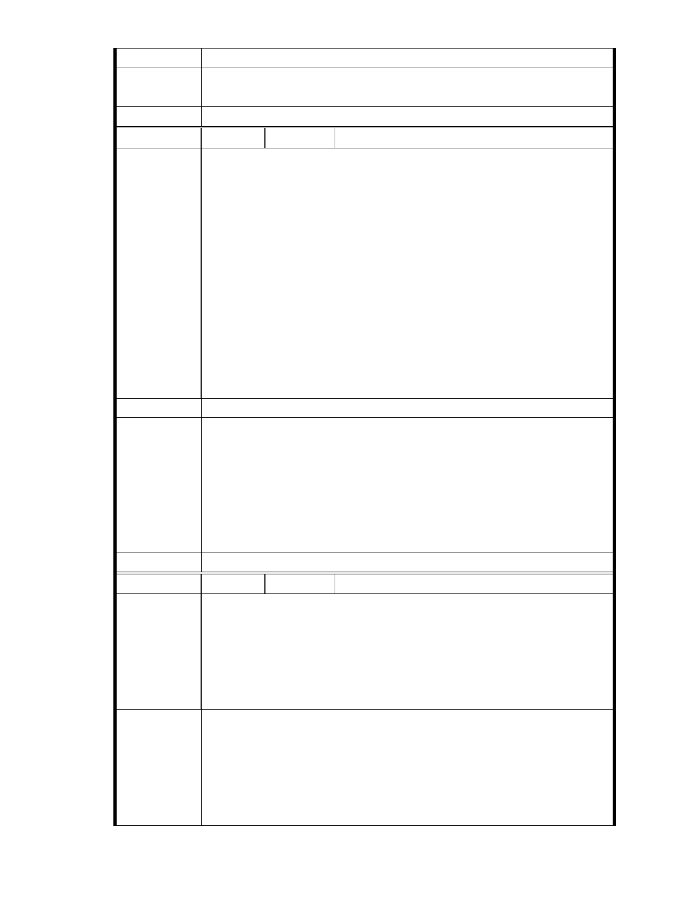

建議辦法
後續審理程序將要求申請人加強與在地區民、社會大眾，就基地現況、
市府說明
規劃方案及環境助益作為等方面加強溝通。
委 員 會 決 議 同編號 1。
編
號 36
陳情人 1999 市民熱線（UN201011250272 ）
市民來電反映
時間:2010/11/11
地點:內湖區大湖公園北側有一 16 公頃保護地
事由:民眾反映林建元副市長在當日都市計劃委員會主持並審理開發該
筆土地的部分,並通過審核.民眾表示,相關單位及林建元副市長為何不
採納環評單位的意見(該土地不適合開發),不理會該區居民的反對而一
陳 情 理 由 意孤行要開發,且該開發可能造成內湖地區易淹水.
訴求:請相關權責單位重新召開都市計劃委員會審議該案,並勿開發該
地.
於 2010/11/25 11:58 與都市計畫委員會陳福隆 #7795 確認收案
如有不清楚可與市民電話聯絡
本案市民要求以電子郵件方式回覆，電子郵件方式將透過系統自動回覆。
建議辦法
一、本案申請範圍於慈濟購得前已遭非法填土，實不具保護區之功能，
今申請單位欲興辦社會福利事業，故依法辦理都市計畫變程序；目
前申請方案較先前方案已大幅降低開發強度、調整使用項目並承諾
市府說明
大面積滯洪設施等回饋事項，顯示申請單位欲改善現況之誠意。
二、相關陳情意見將納入本案審查人民意見，依法定程序辦理。
三、後續審理程序將要求申請人加強與在地區民、社會大眾，就基地現
況、規劃方案及環境助益作為等方面加強溝通。
委 員 會 決 議 同編號 1。
編
號 37
陳情人 陳乃立
大湖地區因開發成功路而環境慘遭破壞，包括對於以上保護區的亂填
土、違法使用，大湖淤泥清除不利，市政府公權力不但未能伸張，反而
在經過溫妮、娜莉兩次大淹水，大湖里喪失 5 個寶貴生命與無數財產
陳情理由
之後，居然圖謀方便計劃擬將該保護區開放變更使用，真是令市民無法
接受市政府如此忽視民意及市民身家安全之作法。
建議辦法
1、都市計劃中設置保護區的目的何在 ? 若是原始的設置原因沒有消
失，我們就應該努力保護它的原貌，在 87 年大湖里就辦理公民投
票，超過 80% 以上的居民希望將該保護區回復保護區原貌，如今 12
年過去，全球氣候變遷更加劇烈，我們認為市政府應該更積極的保護
保護區，取締一切不當使用的現況，設置水保公園作為後世效法。
2、據悉目前提出變更使用之申請單位為規避環評程序，刻意減小本次申
- 40 -